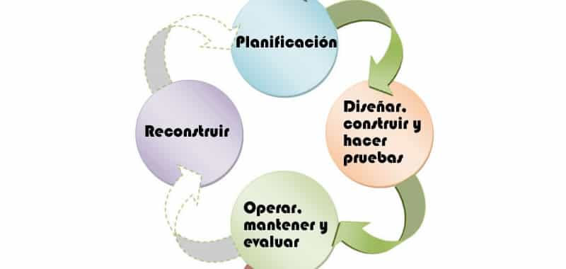
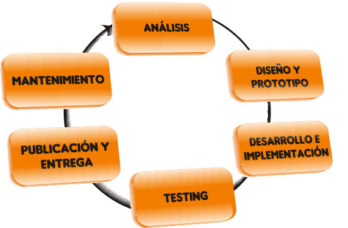
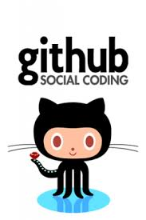
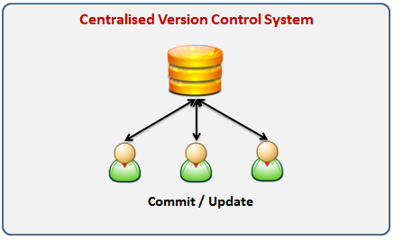
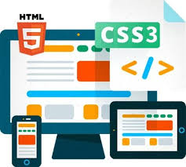
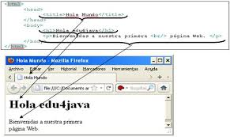

Información general
Obtener los conocimientos necesarios para realizar de forma correcta el desarrollo de un proyecto de
diseño web, desde la estructura del sitio, su contenido, organizándolo de una forma acertada y eficaz,
manteniendo su coherencia y haciendo uso del control de versiones, git, HTML y ccs.
- Lectura 1
- Lectura 2
- Lectura 3
- Lectura 4
- Lectura 5
Tweets by UniversidadUNAD Lectura 1
COMO SE DESARROLLA UN PROYECTO WEB
El desarrollo de proyectos web nos permite conocer cada uno de los pasos que son necesarios para la formación de una página web, dando como inicio al análisis de que se desea tener dentro de la misma, el diseño prototipo, su desarrollo e implementación, el testing y su posterior entrega, por medio del uso de git HTML y CCS, la cual a medida que se va haciendo uso de esta página se le va realizando su respectivo mantenimiento, corrigiendo información, fluidez, estilo y diseño manteniéndola tal y cual como el cliente lo desea.
 
InicioLectura 2
CONTROL DE VERSIONES "GIT" El desarrollo de proyectos web nos permite conocer cada uno de los pasos que son necesarios para la formación de una página web, dando como inicio al análisis de que se desea tener dentro de la misma, el diseño prototipo, su desarrollo e implementación, el testing y su posterior entrega, por medio del uso de git HTML y CCS, la cual a medida que se va haciendo uso de esta página se le va realizando su respectivo mantenimiento, corrigiendo información, fluidez, estilo y diseño manteniéndola tal y cual como el cliente lo desea.
 
InicioLectura 3
CREAR LOS ATRIBUTOS Y EL ESTILO DE LA PÁGINA WEB POR MEDIO DEL USO DEL HTML Y CCS. Para la creación de un repositorio es necesario utilizar un sistema de control de versiones el cual nos va registrar los cambios realizados en un archivo o en un conjunto de archivos que van a ser o que se están utilizando en un proyecto agregando versiones a medida que vamos modificando, agregando o eliminando elementos de nuestro proyecto, permitiendo moverse entre las diferentes versiones si es necesario, pasando por los tres estados: Working directory, staging área y repossitory.


InicioLectura 4
ESTILOS INTERNOS Y EXTERNOS EN CCS3
Los estilos de CCS son los encargado de reslizar la insercion de los atributos que tendra la pagina web, otorgando las caracteristicas necesarias para la personalizacion adecuada de la misma, teniendo un control total de todo el proyecto. La implementacion de CSS Interna se cargan inmediatamente paro esto aumenta el tiempo de carga, y de esta forma no se puede poner el mismo codigo para diferentes paginas puesto que viene realizada la codificacion en el archivo Html. La implementacion de CSS externa por su parte se realiza independientemente en en un archivo .CSS y por lo cual permite que los estilos desarrollados en este archivo se puedan aplicar a diferentes paginas.


InicioLectura 5
ESTRUCTURA BASICA DE UNA PAGINA HTML
Una pagina html esta dividida inicialmente por los contenedore: HTML elemento encargado de llevar todo el contenido de la pagina, HEAD encargado de designar y llevar el encabezado del documento, la barra de titulo y las palabras clave al momento de realizar la busqueda de la pagina, y finalmete BODY encargado de llevar todo el contenido de la pagina, es decir todo el contenido que deseamos ver en el navegador. una vez creamos el esquelo de la pagina con estos contenedores, podemos iniciar a crear lo que deseamos ver en nuestra pagina por medio de los diferentes elementois que nos permiten la personalizacion de nuestra pagina, tales como: TITLE (titulos), P (texto) y demas herramientas que nos permiten el control total y creativo.


Inicio